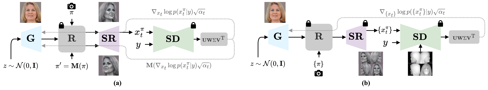

Our method effectively balances stylization and identity preservation, whereas other approaches often struggle to achieve high-quality stylization, lack accurate identity retention, and suffer from generating identical faces for different inputs.
You may refresh the page to synchronize all visible videos.
Input
Joker
Pixar
Zombie
Statue
Werewolf
Sketch
Motivation
Domain adaptation in GANs is particularly challenging because it requires maintaining the integrity of the latent space while transferring visual style. In this context, we address the problem of identity preservation for 3D human heads during stylization, using diffusion distillation. We find that standard score distillation sampling (SDS) fails in this setting, as its inherently mode-seeking behavior leads to mode collapse and unstable adaptation. Prior methods attempt to counteract this with additional loss terms, but we show that the problem lies in the nature of the SDS signal itself. To overcome this, we introduce Likelihood Distillation (LD) for GANs, which provides both high-variance stylization signal and stable training. In addition, we propose several complementary techniques, such as mirror gradients, grid denoising, and score rank reweighing that further stabilize and enhance domain adaptation. Through qualitative and quantitative evaluations, we demonstrate that our approach significantly outperforms previous 3D GAN stylization methods, implicit 3D stylization techniques, and 2D diffusion-based face editing baselines.
Method
The aim is to finetune the PanoHead generator \(\mathbf{G}\) for diverse latent samples \(z\) while the conditional denoiser \(\mathbf{SD}\) injects the target style. Our pipeline integrates mirror gradients (Fig. a) and multi-view grid distillation (Fig. b), and in both stages we apply SVD-based rank re-weighing of the diffusion scores.

We adapt PanoHead by matching differentiable renders \(x_t^\pi\) to a diffusion model guided by prompt \(y\). The likelihood distillation objective couples diffusion scores with the generator parameters \(\theta\):
To promote view consistency we leverage head symmetries. For mirrored yaw pairs \((\pi,\pi')\) we inject mirror gradients using the flip operator \(\mathbf{M}\) and DDPM scaling \(\sqrt{\bar{\alpha}_t}\):
We approximate the full pose set with four renders, supervise them with a depth-conditioned ControlNet, and apply gradients before the super-resolution layers to prevent resolution mismatch while correlating views.
Finally, we reweigh stylization cues by applying a rank-weighted singular value decomposition to the score tensor with coefficients \(\mathbf{W} = \mathrm{diag}(1, 0.75, 0.5, 0.25)\):
Down-weighting the lower singular modes suppresses color and saturation drift while keeping the dominant rank aligned with identity cues, yielding balanced stylization across poses.
Why LD over SDS
Score Distillation Sampling (SDS) optimizes a reverse KL objective by regressing the diffusion noise residual (i.e., subtracting Ɛ), which makes the gradients mode-seeking and prone to collapsing different latent samples to similar stylizations. Likelihood distillation (LD) instead optimizes the negative log-likelihood of renders and provides diversity-seeking gradients that better preserve the GAN prior.
As reported in the paper, LD avoids the over-smoothing and saturation artifacts observed with SDS, requires lower classifier-free guidance, and yields sharper, identity-preserving edits across prompts. Divergence is not a problem as opposed to SDS because we heavily leverage a strong GAN prior.
Qualitative Results and Comparisons
You may refresh the page to synchronize all visible videos.
Ours
Input
Joker
Pixar
Zombie
Statue
Werewolf
Sketch
StyleCLIP
SG-NADA
SG-Fusion
DiffGAN3D
Joker edits. From top to bottom: input, StyleCLIP, StyleGAN-NADA, StyleGANFusion, DiffusionGAN3D, ours.
Sketch edits. From top to bottom: input, StyleCLIP, StyleGAN-NADA, StyleGANFusion, DiffusionGAN3D, ours.
More results are available in the paper and supplementary materials.